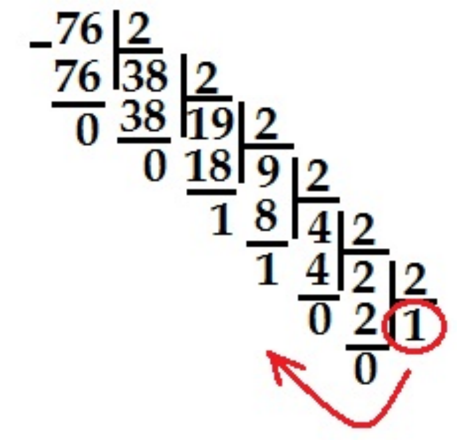
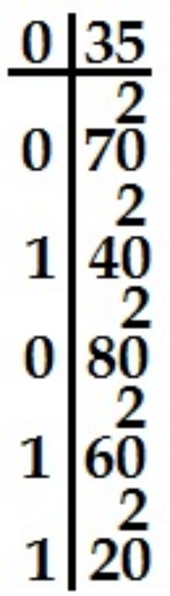
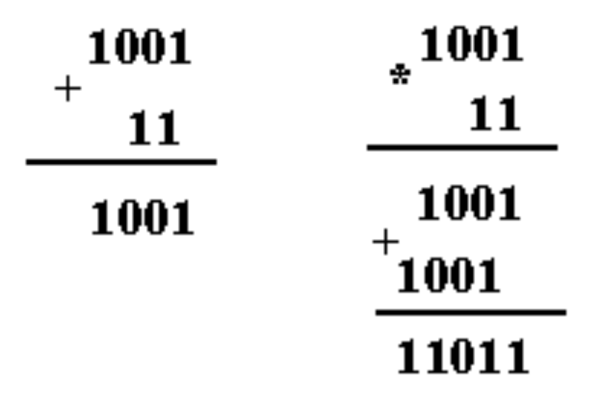
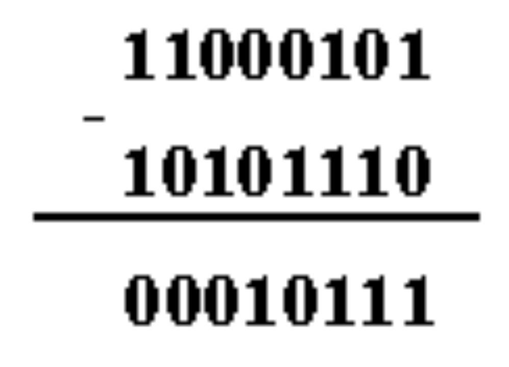
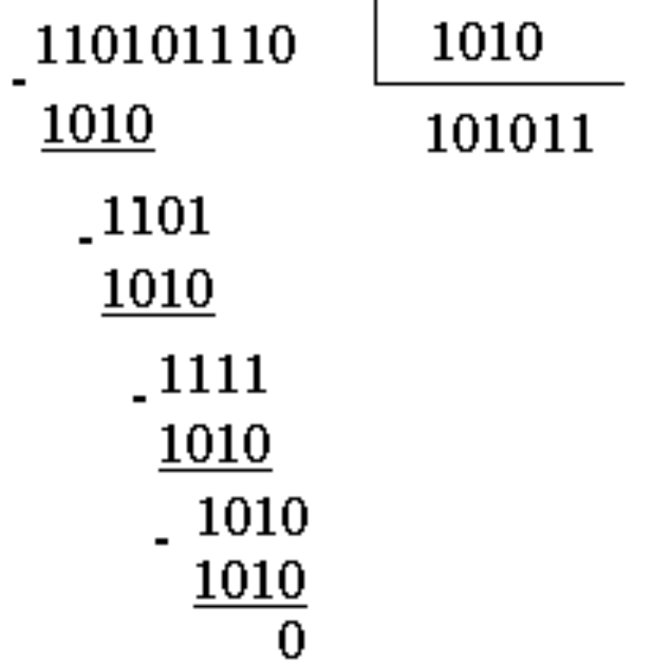

5-Тема: Арифметические основы компьютерной обработки информации
План занятия:
1. Системы счисления.
2. Позиционные и непозиционные системы счисления.
3. Системы двойного, восьмого и шестнадцатого числа.
4. Перевод чисел из одной системы в другую.
Система счисления (СС) - это система записи чисел с помощью определенного набора цифр. CС называется позиционной, если одна и та же цифра имеет различное значение, которое определяется ее местом в числе. Десятичная СС является позиционной: 999. Римская СС является непозиционной. Значение цифры Х в числе ХХІ остается неизменным при вариации ее положения в числе. Количество различных цифр, употребляемых в позиционной СС, называется основанием СС. Если основание используемой СС больше десяти, то для цифр вводят условное обозначение со скобкой вверху или буквенное обозначение.
В шестнадцатеричной СС основа - это цифры 0,1,2,3,4,5,6,7,8,9,10,11,12,13,14,15 с соответствующими обозначениями 0,1,2,3,4,5,6,7,8,9,A,B,C,D,E,F. Примеры чисел: 17D.E, F12A.
Двоичная СС - это система, в которой для записи чисел используются две цифры 0 и 1. Основанием двоичной системы счисления является число Двоичный код числа - запись этого числа в двоичной системе счисления. Например,
1=12
2=102
7=1112
120=11110002.
В ВТ применяют позиционные СС с недесятичным основанием: двоичную, восьмеричную, шестнадцатеричную. 16-ричная и 8-ричная СС используются при составлении программ на языке машинных кодов для более короткой и удобной записи двоичных кодов – команд, данных, адресов и операндов.
Перевод чисел из десятичной СС в заданную.
1) Для перевода целых чисел десятичной системы счисления в другую систему счисления последовательно выполняют деление нацело на основание новой СС, пока не получат частное, меньшее этого основания.. Число в новой СС записывают, начиная с последнего частного, добавляя к нему остатки.
Например: Необходимо перевести число 76 из 10-ной в 2-ую СС.

Ответ: 7610=10011002.
2) Для перевода десятичных дробей из десятичной СС в другую СС последовательно выполняют умножение дробной части на основание новой системы счисления, пока она не станет равной нулю. Число в новой СС записывают из целых частей произведений, начиная с первого.
Например: Необходимо перевести число 0.35 из 10-ной в 2-ую СС.

Ответ: 0.3510=0.010112
Необходимо отметить, что не каждое число может быть точно выражено в новой системе счисления, поэтому иногда вычисляют только требуемое количество разрядов дробной части, округляя последний разряд.
Перевод чисел из произвольной системы в десятичную.
Число записывают в виде суммы произведений цифр в числе на основание системы счисления в степени порядка. По-другому это называется развернутой формой числа.
Например: 11012=1*23+1*22+0*21+1*20=1310
17D.E16=1·162+ 7·161+13·160+ 14·16-1+12·16-2=381.92187510
Перевод между основаниями, составляющими степень 2.
Для того, чтобы из восьмеричной системы счисления перевести число в двоичный код, необходимо каждую цифру этого числа представить триадой двоичных символов. Лишние нули в старших разрядах отбрасываются.
Например: 234.778 =010 011 100.111 1112 = 10 011 100.111 1112
1234568 = 001 *** 011 *** 101 110 2 = 1 010 011 100 101 1102
Обратный перевод: двоичное число делят справа налево (целую часть) и слева на право (дробную часть) на триады двоичных цифр. Каждая триада двоичных цифр заменяется восьмеричной цифрой, при этом, если необходимо, число выравнивается путем дописывания нулей перед целой частью или после дробной.
Например: 11001112 = 001 *** 1112 = 1478
11.10012 = 011.100 1002 = 3.448
При переводах между двоичной и шестнадцатеричной СС используются четверки цифр. При необходимости выравнивание выполняется до длины двоичного числа, кратной четырем.
Например: 1234.AB7716 = 0001 0010 0011 0100.**** **** **** 01112 =1 0010 0011 0100.1010 1011 0111 01112<
CE56716 = 1100 1110 0101 0110 01112
11001112 = 0110 01112 = 6716
При переходе из восьмеричного счисления в шестнадцатеричное счисление и обратно используется вспомогательный двоичный код числа.
Например: 12345678 = 001 010 011 100 101 110 1112 = **** 0011 1001 0111 01112 = 5397716
120.348 = 001 010 000. 011 1002 = 0101 0000.0111 00002 = 50.716
CE456716 = 1100 1110 0100 0101 0110 01112 = 110 011 *** 100 010 101 100 1112 = 634425478
Кодирование данных двоичным кодом
Для автоматизации работы с данными, относящимися к различным типам, очень важно унифицировать их форму представления. Для этого обычно используют прием кодирования, т.е. выражение данных одного типа через данные другого типа.
Примеры систем кодирования: человеческие языки, азбуки (кодирование языка с помощью графических символов), запись математических выражений, телеграфная азбука Морзе, код Брайля для слепых, морская флажковая азбука и т.п.
Своя система кодирования существует и в вычислительной технике – она называется двоичным кодированием и основана на представлении данных последовательностью всего двух знаков: 0 и 1. Эти знаки называются двоичными цифрами или бит.
Одним битом можно выразить два понятия: 0 или 1 (да иди нет, черное или белое, истина или ложь и т.п.). Если увеличить количество битов до двух, то уже можно выразить четыре различных понятия – 00 01 10 11. Тремя битами можно закодировать уже восемь различных понятий –000 001 010 100 101 110 101 111.
Увеличивая на единицу количество разрядов в системе двоичного кодирования, можно увеличить в два раза количество значений, которое можно закодировать:
N=2I, где I – число разрядов, N - количество значений.
Компьютер может обрабатывать числовые, текстовые, графические, звуковые и видео данные. Все эти виды данных кодируются в последовательности электрических импульсов: есть импульс (1), нет импульса (0), т.е. в последовательности нулей и единиц. Такие логические последовательности нулей и единиц называются машинным языком.
Системы счисления
При работе с компьютерами приходится параллельно использовать несколько позиционных систем счисления – двоичную, восьмеричную, шестнадцатеричную.
Системы счисления – принятый способ наименования и записи чисел с помощью символов, имеющих определенные количественные значения.
Все системы счисления можно разделить на два класса: позиционные и непозиционные. В позиционной системе счисления количественное значение каждой цифры зависит от ее места (позиции) в числе. В непозиционных системах счисления значение цифры не зависит от места, которое он занимает в числе. Самый известный пример – римская система счисления. В этой системе счисления используется 7 знаков
I (1) V (5) X (10) L (50) C (100) D(500) M(1000)
Например, III (три) LIX (59) DLV (555)
Для записи чисел в различных системах счисления используется некоторое количество отличных друг от друга знаков. Число таких знаков в позиционной системе счисления называется основанием системы счисления.
Некоторые системы счисления
|
Основание |
Системы счисления |
Знаки |
|
2 |
Двоичная |
0, 1 |
|
5 |
Пятеричная |
0, 1, 2, 3, 4 |
|
8 |
Восьмеричная |
0, 1, 2, 3, 4, 5, 6, 7 |
|
10 |
Десятичная |
0, 1, 2, 3, 4, 5, 6, 7, 8, 9 |
|
16 |
Шестнадцатеричная |
0, 1, 2, 3, 4, 5, 6, 7, 8, 9, A, B, C, D, E,F |
В позиционной системе счисления число может быть представлено в виде суммы произведений коэффициентов на степени основания системы счисления.
Например, 23,43(10) = 2*101 + 3*100 + 4*10-1 + 3*10-2
Т. е. значение каждого знака в числе зависит от позиции, которую занимает знак в записи числа. В примере первый знак 3 означает число единиц, второй – число сотых долей единицы.
692(10) = 6*102 + 9*101 + 2*100
1101(2) = 1*23 + 1*22 + 0*21 + 1*20 = 13(10)
112(3) = 1*32 + 1*31 + 2*30 = 14(10)
341,5(8) = 3*82 + 4*81 + 1*80 + 5*8-1 = 225,125(10)
A1F,4(16) = A*162 + 1*161 + F*160 + 4*16-1 = 2591,06(10)
Если в приведенных выше примерах произвести арифметические действия в правой части равенства, то получится число в десятичной системе счисления. Это и есть способ перевода из любой системы счисления в десятичную.
Чтобы перевести целую часть числа из десятичной системы в систему с основанием В, необходимо разделить ее на В. Остаток даст младший разряд числа. Полученное при этом частное необходимо вновь разделить на В – остаток даст следующий разряд числа и т.д. Для перевода дробной части ее необходимо умножить на В. Целая часть, полученного произведения будет первым (после запятой, отделяющей целую часть от дробной) знаком. Дробную часть произведения необходимо вновь умножить на В. Целая часть полученного числа будет следующим знаком и т.д.
Двоичная система счисления
Особая значимость двоичной системы счисления в информатике определяется тем, что внутреннее представление любой информации в компьютере является двоичным, т.е. описываемым наборами только из двух знаков (0 и 1).
Перевод из десятичной системы в двоичную
Целая и дробная части переводятся порознь. Для перевода целой части числа необходимо ее разделить на основание системы счисления 2 и продолжать делить частные от деления до тех пор, пока частное не станет равным 0. Значение получившихся остатков, взятые в обратной последовательности, образуют искомое двоичное число.
Например,
25 : 2 = 12 (1),
12 : 2 = 6 (0),
6 : 2 = 3 (0),
3 : 2 = 1 (1),
1 : 2 = 0 (1).
25(10) = 11001(2)
Для перевода дробной части надо умножить ее на 2. Целая часть произведения будет первой цифрой числа в двоичной системе. Затем, отбрасывая у результата дробную часть, вновь умножаем на 2 и т.д. Конечная десятичная дробь при этом вполне может стать бесконечной (периодической) двоичной.
Например,
0,73 * 2 = 1,46 (целая часть 1)
0,46 * 2 = 0,92 (целая часть 0)
0,92 * 2 = 1,84 (целая часть 1)
0,84 * 2 = 1,68 (целая часть 1) и т.д. 0,73(10) = 0,1011…(2)
Арифметические операции с двоичными числами
При арифметических операциях используются таблицы сложения и умножения и вычитания в двоичной системе
|
+ |
0 |
1 |
|
* |
0 |
1 |
|
- |
0 |
1 |
|
0 |
0 |
1 |
|
0 |
0 |
0 |
|
0 (10) |
0 |
1 |
|
1 |
1 |
10 |
|
1 |
0 |
1 |
|
1 |
1 |
0 |
При двоичном сложении 1 + 1 возникает перенос 1 в старший разряд, как и в десятичной арифметике. Например,

При двоичном вычитании необходимо помнить, что занятая в ближайшем разряде 1, дает две единицы младшего разряда. Если в соседних старших разрядах стоят нули, то 1 занимается через несколько разрядов. При этом единица, занятая в ближайшем значащем старшем разряде, дает две единицы младшего разряда и единицы во всех нулевых разрядах, стоящих между младшим и тем старшим разрядом, у которого бралась единица.
Вычтем 174 из 197

Деление двоичных чисел происходит с использованием двоичных таблиц умножения и вычитания. Разделим 430 на 10

Восьмеричная и шестнадцатеричная системы счисления
Перевод чисел из десятичной системы в восьмеричную производится также как и в двоичную с помощью умножения и деления, только не на 2, а на 8.
Например, 58,32(10)
58 : 8 = 7 (2 в остатке)
7 : 8 = 0 (7 в остатке)
0,32 * 8 = 2,56
0,56 * 8 = 4,48
0,48 * 8 = 3,84, …
58,32(10) = 72,243…(8)
Перевод чисел из десятичной системы счисления в 16-ричную производится аналогично. 567(10)0 = 237(16)
Соответствие чисел в различных системах счисления
|
Десятичная |
Шестнадцатеричная |
Восьмеричная |
Двоичная |
|
0 |
0 |
0 |
0 |
|
1 |
1 |
1 |
1 |
|
2 |
2 |
2 |
10 |
|
3 |
3 |
3 |
11 |
|
4 |
4 |
4 |
100 |
|
5 |
5 |
5 |
101 |
|
6 |
6 |
6 |
110 |
|
7 |
7 |
7 |
111 |
|
8 |
8 |
10 |
1000 |
|
9 |
9 |
11 |
1001 |
|
10 |
A |
12 |
1010 |
|
11 |
B |
13 |
1011 |
|
12 |
C |
14 |
1100 |
|
13 |
D |
15 |
1101 |
|
14 |
E |
16 |
1110 |
|
15 |
F |
17 |
1111 |
Для перевода целого двоичного числа в восьмеричное необходимо разбить его справа налево на группы по 3 цифры (самая левая группа может содержать менее трех двоичных цифр), а затем каждой группе поставить в соответствие ее восьмеричный эквивалент. Такие группы называют двоичными триадами.
Например,
11011001 = 11 011 001 = 331(8)
Перевод целого двоичного числа в шестнадцатеричное производится путем разбиения данного числа на группы по 4 цифры – двоичные тетрады.
1100011011001 = 1 **** **** 1001 = 18D9(16)
Для перевода дробных частей двоичных чисел в восьмеричную или шестнадцатеричную системы аналогичное разбиение на триады или тетрады производится от запятой вправо (с дополнением недостающих последних цифр нулями)
0,1100011101(2) = 0,110 001 110 100 = 0,6164(8)
0,1100011101(2) = 0,1100 0111 0100 = С74(16)
Перевод восьмеричных (шестнадцатеричных) чисел в двоичные производится обратным путем – сопоставлением каждому знаку числа соответствующей тройки (четверки) двоичных цифр.
А1F(16) = 1010 0001 1111(2)
127(8) = 001 010 111(2)
Простота подобных преобразований связана с тем, что числа 8 и 16 являются целыми степенями числа 2. Этой простотой объясняется популярность восьмеричной и шестнадцатеричной систем счисления.